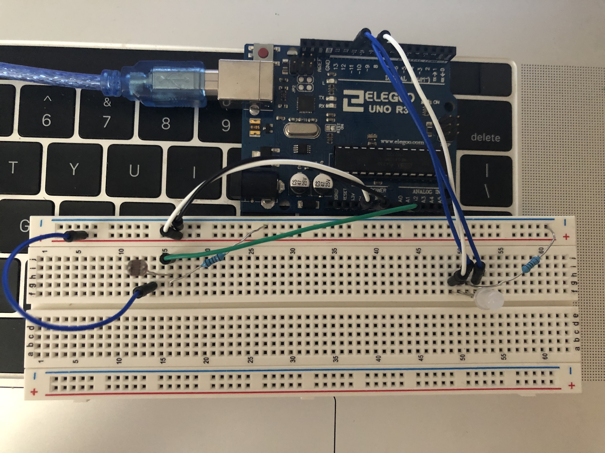

Circuits

Here is all the documentation for assignment 3!
The maximum current can flow in the circuit is 20mA and the votalge when pin output is high is 5V. The voltage drop for
green LED is 1.8V
and 3.3V for blue and white LEDs. So the voltage left for green LED is 3.2V and 1.7V for blue and
white LEDs. With the maxium current, the
reistor needed for the circuit is calcultated as 160Ω and 85Ω respectively. The
one I chose is the 220 resistor, which is good for this
circuit since higher than the calculated resistant.
The resistor I used to connect to the photoresistor is a 100KΩ resistor. I use a big resistor to limit the current here to limit
the amount of
current that's going through them, also limits the range. In this case the voltage across each resistors is
approximately 2.5V to 5V, which the
sensor value is expected to be ranged from 500 to 1023, since 5V corresponds to 1023
and 0 corresponds to 0. And I map the range from sensor
value to 0-255, which is the range for the analogwirte() function,
to change the LED color.
// These constants won't change:
const int sensorPin = A0; // pin that the sensor is attached to
//variables for three pins that led is attached to
int R = 9;
int G = 10;
int B = 11;
//initialize the variables for sensor value, max value and min value
int value = 0;
int max = 0;
int min = 0;
void setup() {
// turn on the red LED to signal the start of the calibration period:
pinMode(11, OUTPUT);
digitalWrite(11, HIGH);
// initialize the LED pins as outputs:
pinMode(R, OUTPUT);
pinMode(G, OUTPUT);
pinMode(B, OUTPUT);
// this while loop is directly cited from the calibration example
// calibrate during the first five seconds
while (millis() < 5000) {
sensorValue = analogRead(sensorPin);
// record the maximum sensor value
if (sensorValue > sensorMax) {
sensorMax = sensorValue;
}
// record the minimum sensor value
if (sensorValue < sensorMin) {
sensorMin = sensorValue;
}
}
// signal the end of the calibration period
digitalWrite(11, LOW);
}
void loop() {
// read the sensor:
sensorValue = analogRead(sensorPin);
// constrain the sensor value between the max and min
sensorValue = constrain(sensorValue, sensorMin, sensorMax);
// map the max and min value into 0-255 range
sensorValue = map(sensorValue, sensorMin, sensorMax, 255, 0);
// fade the RGB LED using the adjusted value:
// if the sensor value is 0
if (sensorValue == 0){
// turn the LED off
analogWrite(R, sensorValue);
analogWrite(G, sensorValue);
analogWrite(B, sensorValue);
}
// if the sensor value is greater than the 2/3 of the 255
else if (sensorValue >= 2*(255)/3) {
// fade the red LED using the sensor value
analogWrite(R, sensorValue);
}
// if the sensor value is greater than the 2/3 of the 255 and less than 1/3
else if (sensorValue >= (255)/3){
// fade the green LED using the sensor value
analogWrite(G, sensorValue);
}
// or else if the sensor value is less than 1/3 of the 255
else (sensorValue <= (255)/3);{
// fade the blue LED using the sensor value
analogWrite(B, sensorValue);
}
}